Neritic design review
Neritic's data and honesty are strong, but the interface works against them. It repeats warnings until they stop registering, sets nearly everything in 13 px type, and gives the least applicable evidence, the offshore model, the boldest marks on the page. This review audits the live design, studies seven references, proposes three logos and two complete interface directions, and recommends a path.
Summary and decisions
Recommendation: logo B, Depth N, with the interface built on Direction B’s structure with Direction A’s typography and reading surfaces, on the current relief basemap (details in section 6). Nothing is implemented in the product yet. The audit baseline, prototypes and logo files live on the branch design/neritic-excellence and in this page.
Decisions I need from you:
- Logo: A, B or C. Approve one, or ask for another round.
- Direction: A or B, or B with A's reading surfaces, which is my recommendation.
- Light or dark briefing on phones. I propose a light, high-contrast briefing and a dark map.
- Research mode: fold it into an "Evidence and sources" depth layer, or keep it as a separate mode.
1 · Audit of the current design
I captured 60 baseline screenshots of the private preview (production data) at 1440, 1024, 768, 390 and 320 px: the welcome; the map with Forecast, Satellite and Currents; a map inspection; My Coast for Monterey and for Crescent City Dungeness; HAB evidence; Research mode; Bloom; Fisheries; About; and Sources. All 60 loaded with 0 console errors. I measured the rendered pages in the browser rather than reading the DOM.
Measured
| Page | Font sizes in use | Text under 13 px | Words | Page height | Phone controls under 44 px | "Not verified" mentions |
|---|---|---|---|---|---|---|
| Ocean Map | 7–8 | 19–21 % | 230 | 1 screen | 26 of 31 | 3 (4 on phone) |
| My Coast, Monterey | 18 | 12 % | 1,325 | 4,777 px · 6,293 px phone | 31 of 65 | 2 |
| My Coast, Research mode | 16 | 5 % | 2,439 | 7,942 px · 12,191 px at 320 | 76 of 85 | 7 |
| Bloom station | 16 | 2 % | 2,265 | 1,603 px | 37 of 47 | 3 |
| Fisheries | 15–17 | 1 % | 2,551 | 995 px | 57 of 69 | 3 |
13 px is the most common size on every page, at 35–61 % of the text, and half-pixel sizes (12.5, 13.5, 14.5, 15.5, 16.5) show there is no type scale. The 44 px count includes inline text links. WCAG 2.2 AA requires 24 px, so 44 px is the stricter phone guideline (Apple HIG, WCAG AAA), applied deliberately for gloved, wet or sunlit use.
Findings, by priority
P0 can mislead or erode trust. P1 hurts usability. P2 is craft and polish.
The offshore model looks like the strongest evidence at the harbor
In "HAB evidence near Monterey", the NOAA model row ("No value here · nearby offshore median 77%") is drawn as the tallest, most saturated marks on the chart, right under the "trip" marker. The rule that it describes offshore cells, not these waters, appears only in 13 px grey text below the chart. A glance reads it as "77 % at Monterey on my trip day".
Fix: lead with "No model value at Monterey's nearshore waters". Show the offshore cells as context with their distance (nearest 6.6 km out), in an outlined or hatched encoding, never at the same visual weight as samples taken here.
Evidence: My Coast timeline (desktop and phone), below.
Notice status is everywhere, so it registers nowhere
On one map screen, the unverified-notice status appears in the masthead pill, the amber banner, the place chip and the phone tab badge, up to 4 times. Research mode reaches 7. The one item that matters today, CDPH's reported lifting of SN26-021 awaiting review, competes with chrome that says the same thing.
Fix: one notice surface per screen. Tie it to the place, keep "not verified" and the direct CDFW and CDPH links, and promote it when something changes.
Forecast days contradict each other
The panel says "C-HARM forecast for Wed, Oct 14 · issued Oct 14". The day chips call Oct 13 the "nowcast" and Oct 14 "yesterday". The inspector calls the same day "+1 day". The default selection is yesterday, although today's value exists.
Fix: one vocabulary, "issued Tue 13 Oct · valid Thu 15 Oct (today)", on a time bar that marks today and hatches the forecast span. Default to today.
Distance is hidden behind the headline
"Pseudo-nitzschia 4,900 cells/L at Santa Cruz Wharf" heads a section titled "near Monterey", but the station is 41 km NNW, which appears in the grey second line. The nearest station, Monterey Wharf (0.6 km), has reported nothing for 14 months, and that appears only in prose.
Fix: state where each measurement was taken, how far away and how old it is as part of the value: "4,900 cells/L · Santa Cruz Wharf, 41 km NNW · 15 days ago".
No type scale; 13 px everywhere
There are 15–18 distinct font sizes per page, and running text is 13–14 px even on phones. The serif display (Newsreader) carries the page titles, while everything that matters (values, notices, steps) is small sans.
Fix: five sizes; body 16 px on desktop and 17 px in the phone briefing; values set larger than their labels.
The same facts, four times
My Coast says the lifted-notice item in "What matters", again in "Before you leave", and again in Explore → Notices. It gives the 77 % model median in the timeline, the C-HARM card and the prose. Shore samples appear in the summary card, the timeline, the prose paragraph and the station cards. The result is 1,325 words and 7.5 phone screens.
Fix: one answer section, one evidence section and one checklist, each stating a fact once. Depth goes behind disclosure, not repetition.
The masthead competes with the content
On desktop, there are 10 targets before any content: 4 destinations, the Coastal/Research switch, About, the notice pill, Data status, the banner and "More". The phone stacks the masthead, banner, tab bar, a floating "Map" button and the place pill. The floating button covers the CDPH link in the first notice card.
Fix: four destinations. Mode, About and data status move into a menu or footer. No floating button over content.
The forecast map is one colour today
The 10-step lavender-to-pink ramp gives today's real range (73–79 %) a single tone, so Monterey Bay is a flat magenta slab that reads as alarm without information. The dark hatching of the nearshore gap is heavier than the data and reads as land.
Fix: a perceptual sequential ramp with ticks that separates the range actually present, a lighter gap hatch, and cell outlines at high zoom.
Charts lack axes, units and room
The HAB evidence timeline has no value axis, and its time labels collide ("3 mo ago2 mo"). On phone the row labels are cut off ("median within 5 km · …"). Station sparklines show when samples were taken, not what they measured.
Fix: every chart gets a labelled axis with units, a today marker, gaps drawn as gaps and the latest value labelled directly.
The station page hides its best content
Santa Cruz Wharf's 12-month record, the reason to visit, sits behind "Full station analysis". Up front are two numbers and a date strip.
Fix: lead with the chart: toxin and cells over 12 months, the latest sample labelled, the season's range shaded.
Routine latency is shown as failure
"The latest update (Oct 15, 10:03 AM PDT) did not refresh this product" appears in alert red-orange inside the satellite panel, while the data is a normal 3 days old. The station page adds a separate grey "could not reach" banner.
Fix: freshness as a quiet, consistent stamp. Use alert colour only when data is unusable or misleading.
Cards, tints and heavy buttons everywhere
Amber-tinted cards with coloured left rules, nested cards in Explore, and five black pill buttons stacked in the checklist all carry the same visual weight, so nothing leads.
Map details
The boundary label "36°31.46′ N · south limit" renders doubled and blurred. A limit line runs under the toolbar. Current arrows form a uniform white carpet in which speed classes are hard to tell apart. A layer panel truncates its last sentence ("nothing is…").
The brand is generic
Warm cream paper, a serif display and a navy frame is today's default "editorial" look. The 26 px mark is low-contrast in the masthead, and the wordmark is a stock semibold.
Keep:
- The seafloor relief basemap is the product's most beautiful asset.
- The satellite chlorophyll rendering: its viridis-like ramp, honest gaps and per-pixel dates.
- Disciplined copy: the product never says "safe".
- Labels and links: provenance chips, freshness words and direct agency links.
- The three-path welcome.
- The motion tokens: no value interpolation; the sheet spring only.
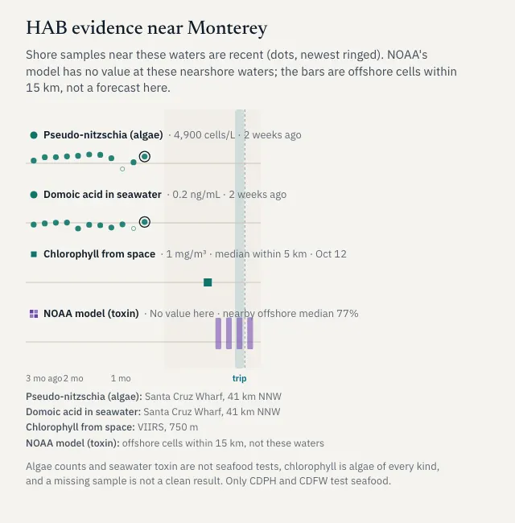
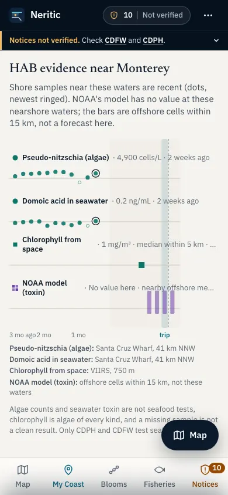
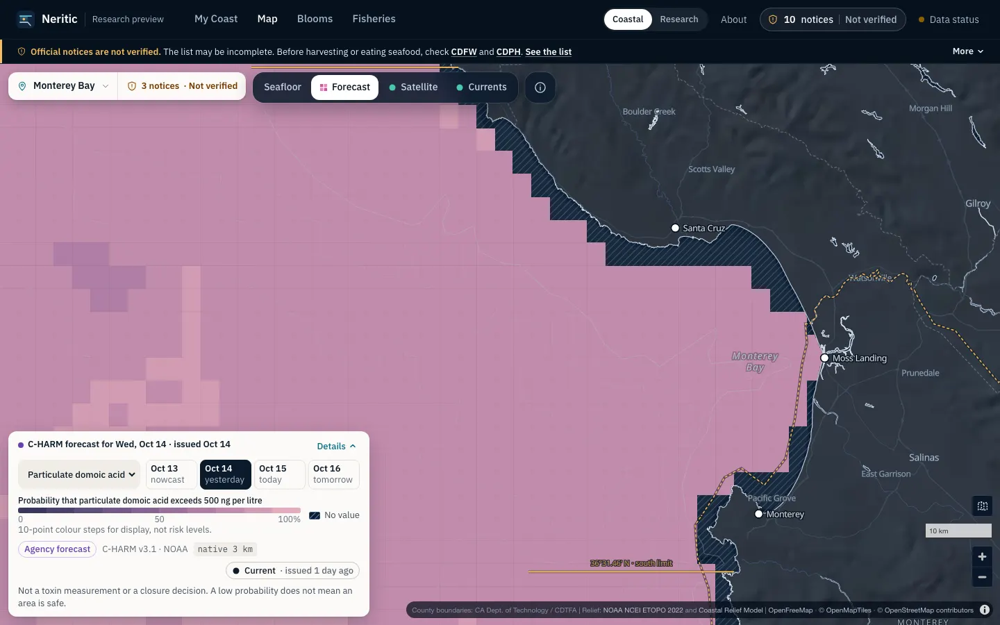
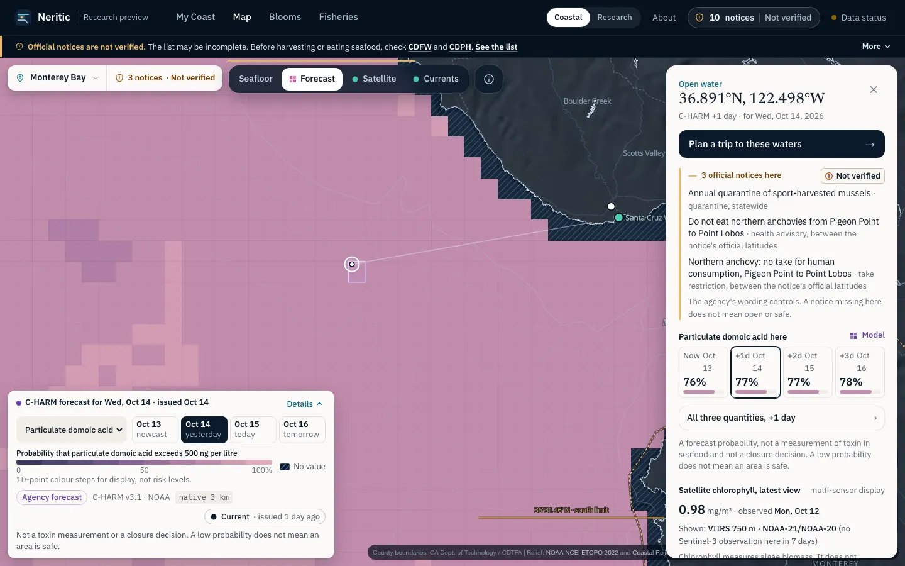
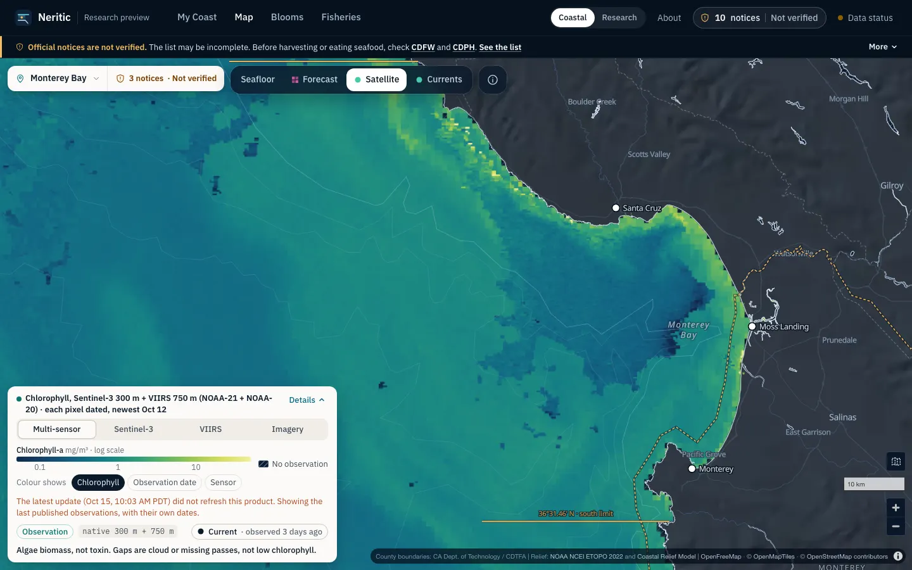
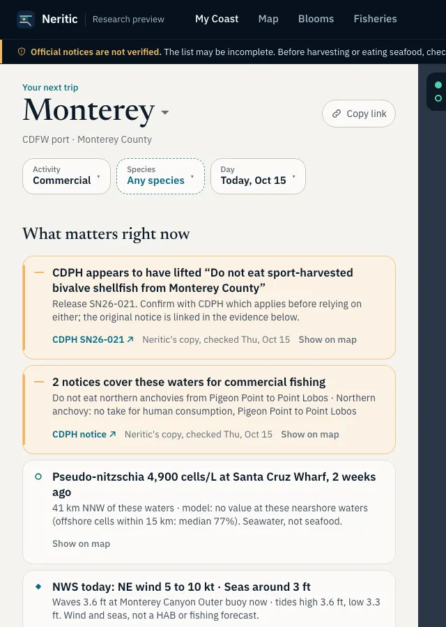
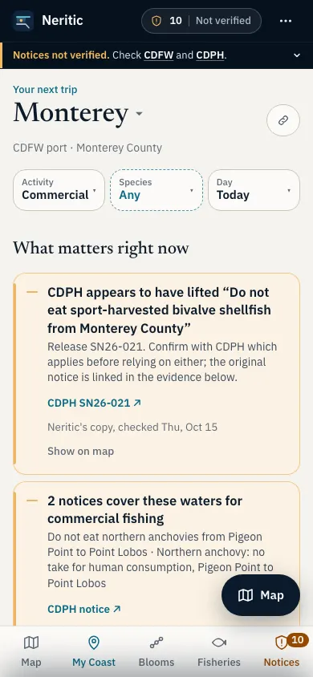
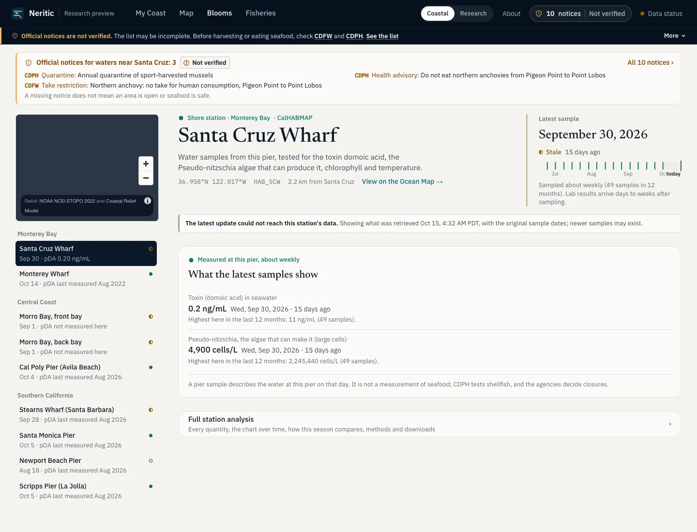
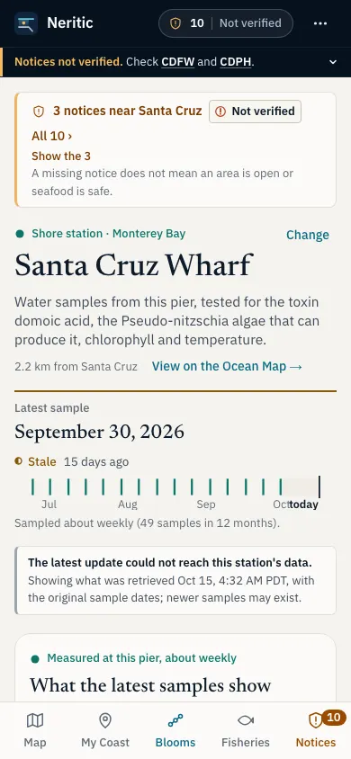
2 · Reference study
A separate research pass read the actual skill files of Emil Kowalski's skills, Impeccable and Taste Skill, and captured Global Fishing Watch, Copernicus MyOcean, earth.nullschool and Linear live at desktop and phone width. No site blocked capture. Figma MCP is not configured in this environment, so prototypes are local HTML rendered with Playwright.
Install a skill? No. Impeccable's launcher downloads a binary and adds an edit hook, which is too invasive for a repository shared by parallel sessions. Taste Skill says it is not for app screens, and its motion budget, which requires animation, conflicts with a tool. Emil Kowalski's review-animations is clean Markdown, but its rules fit in our design doc. Proposed: copy the rules, install nothing.
What transfers, with the example
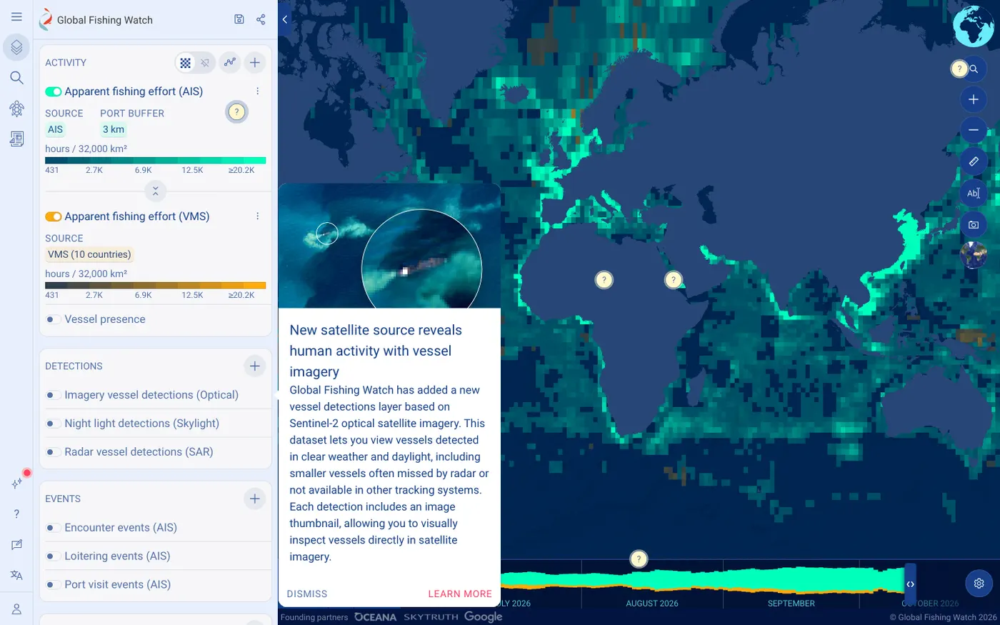
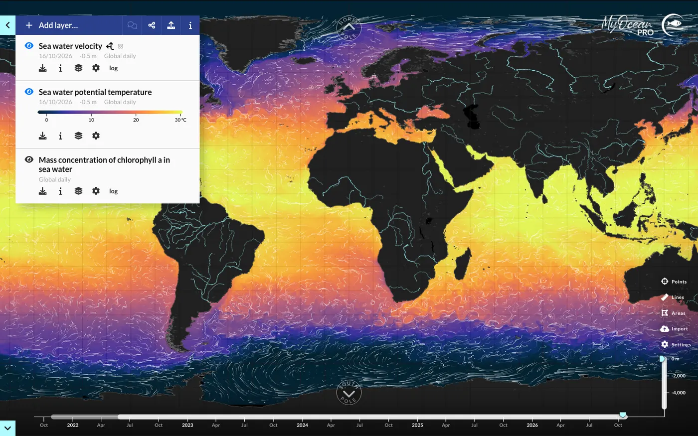
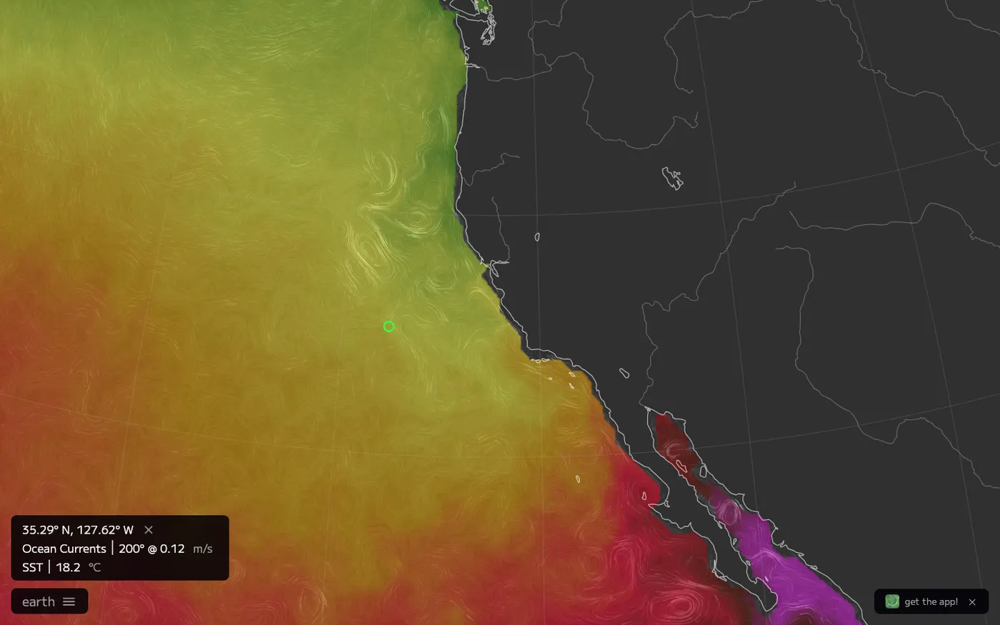
Principles to adopt
- Provenance lives in the layer row. Source · valid time · cadence · resolution, plus a legend with ticks and units (GFW, Copernicus). Neritic: map layers, every evidence item.
- The time control shows where data exists, and where it is forecast. A presence strip, a "today" mark, a hatched and labelled forecast span (GFW's histogram; Copernicus's missing label is the cautionary case). Neritic: map time bar, station charts.
- Native resolution, honest gaps. Visible 3 km C-HARM cells that stop before the shore, labelled "No model value at the shoreline" (GFW's cells). Neritic: map, HAB evidence.
- A tap answers with value, unit, valid time, or "No data here". (nullschool) Neritic: map readout, phone sheet peek.
- Frequency decides motion. Nothing used many times a day animates: time scrubbing, layer toggles, values (Kowalski). Only sheets, popovers and press feedback move.
- Choose light or dark from the scene of use, not the category (Impeccable). A fisherman reads in sun, so the briefing is light and high contrast; the map can stay dark.
- Real data is the hero (Linear). No illustration, glow or decorative chart.
- Plain names, no invented terms, no eyebrows (Linear's method, Impeccable). The current "HAB conditions · measured, observed and modelled" eyebrows go.
- One surface per role; separate surfaces by a tone step, not a border plus shadow (Taste Skill, Impeccable). No nested cards.
- On phone, map and list are separate views (GFW), with a sheet that has two snap points and scrolls before it drags (Vaul).
Rejected or adapted
- Hidden chrome (nullschool). Valid time and source must stay visible on a scientific map.
- Particles over gaps or the coast (nullschool, Copernicus). They imply measurements where there are none. Particles appear only where radials exist, and become static arrows under reduced motion.
- Grey on black (Linear). It fails outdoors. Briefing text targets 7:1.
- GFW's density, hotspots and uppercase section labels.
- Taste Skill's animation budget. It is latency in a tool.
- Rainbow ramps and a phone panel covering 45 % of the map (Copernicus).
The full research notes, including all 14 captures, are at scratchpad/design/refs/REPORT.md.
3 · Logo: three directions
Each direction is a real vector on a 48-unit grid. Each wordmark is outlined from a typeface and then changed by hand: the i-dots are redrawn as true circles, the spacing is set pair by pair, and the lockup is aligned to the wordmark's baseline and sized in x-heights. Every candidate is shown at 16 px (pixel-exact and at 3×), at 32 px, in a browser tab, in a 56 px header (light and dark), in monochrome on both grounds, and as an app icon.
Avoided throughout: wave lines (Neritic Diving's mark is the word over two wave lines), radar arcs, compass roses and sparkles. The colour version uses amber exactly once, for the observation.
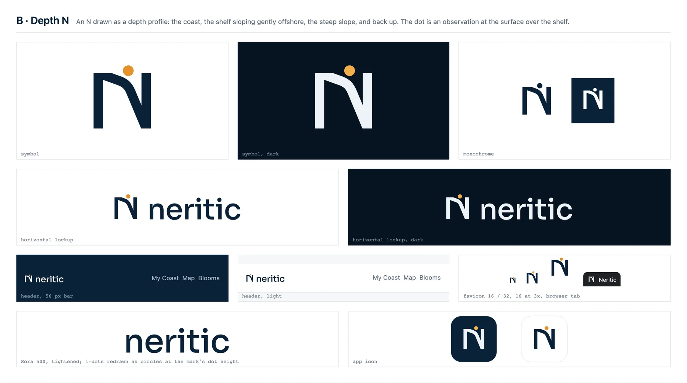
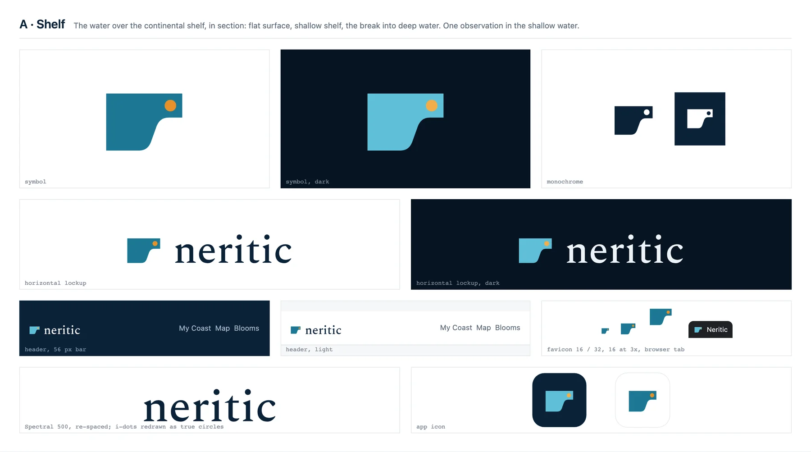
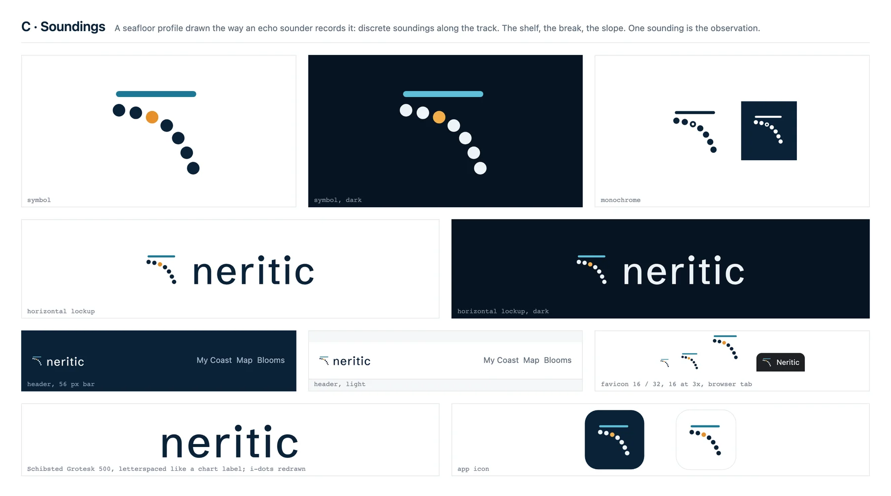
Assessment
| A · Shelf | B · Depth N | C · Soundings | |
|---|---|---|---|
| At 16 px | Clear silhouette | Clear, reads as N | Breaks up: the dots merge into texture |
| Monochrome | Strong; the dot knocks out | Strong | Fair; the observation becomes a ring |
| Ownable | Moderate: a block shape, could read as a flag or a "7" | High: a letter that is also a depth profile | High in concept, low in recognition |
| Meaning | Literal neritic zone | The name and the place in one stroke | Evidence as measurement |
| Risk | Bottom-heavy in lockups | The dot could be read as an accent (Ń); kept clear of the stem | Unreadable as a favicon |
Recommendation: B, Depth N
B is the only candidate that works equally well as a 16 px favicon, an app icon and a header mark. It carries the name, the N, and the meaning, the shelf profile, in one gesture, and it looks like nobody else's mark in the coastal space. Next refinements if approved: optically compensate the diagonal's thickness at the joins, test the dot at 0.9× size, build a 2-weight wordmark (for headers and large uses), and set the clear-space and minimum-size rules.
Vector files: scratchpad/design/logo/out/{A,B,C}-symbol(-dark|-mono).svg and -wordmark.svg. The generator is logo/final.mjs plus board.mjs. The wordmark faces (Sora, Spectral, Schibsted Grotesk) are all SIL Open Font License.
4 · Two interface directions
Both directions are working HTML prototypes built from today's production data: Monterey for commercial fishing, and Santa Cruz Wharf. That includes the real C-HARM grid, real 12-month station records and the real notice registry. Each went through at least two critique-and-fix loops at 1440, 390 and 320 px, with no horizontal overflow and no console errors. Both apply every P0 fix from the audit. They differ in where the product's centre of gravity sits.
Prototype limits: pickers and menus are visual only; Direction A doesn't draw the Satellite and Currents layers; a few Monterey Wharf facts are hand-entered from the data. Sources: scratchpad/design/dirA/ and dirB/.
Direction A · Scientific editorial
A reading surface that leads with the answer. A one-paragraph summary under the place name; the trip settings set as a sentence ("Commercial fishing · any species · today, Thu 15 Oct"); a three-column grid with section names on the left, content in the centre and caveats in the right margin. Type: Source Serif 4 for display and Atkinson Hyperlegible Next for text, designed for low-vision legibility, with 17 px phone body text. A cool paper tone, not cream. Fine rules rather than cards.
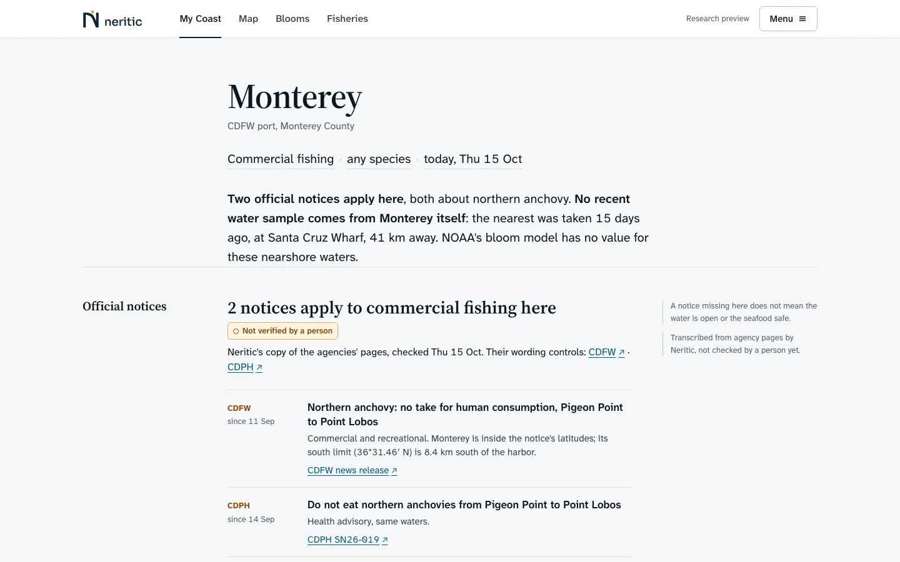
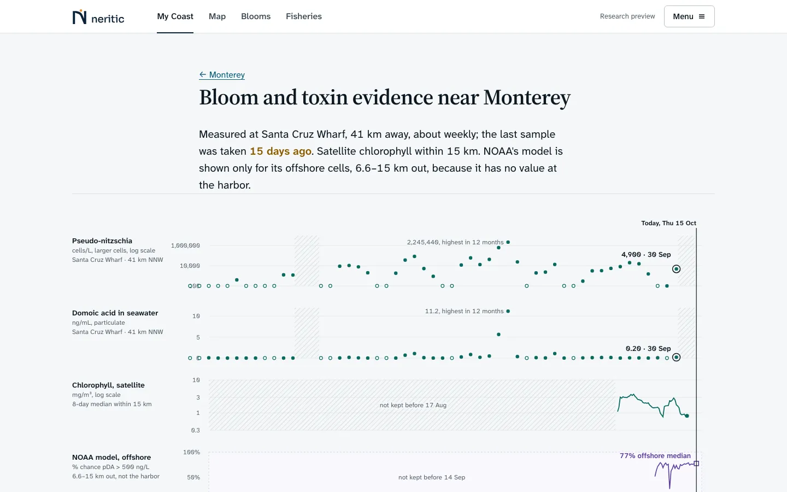
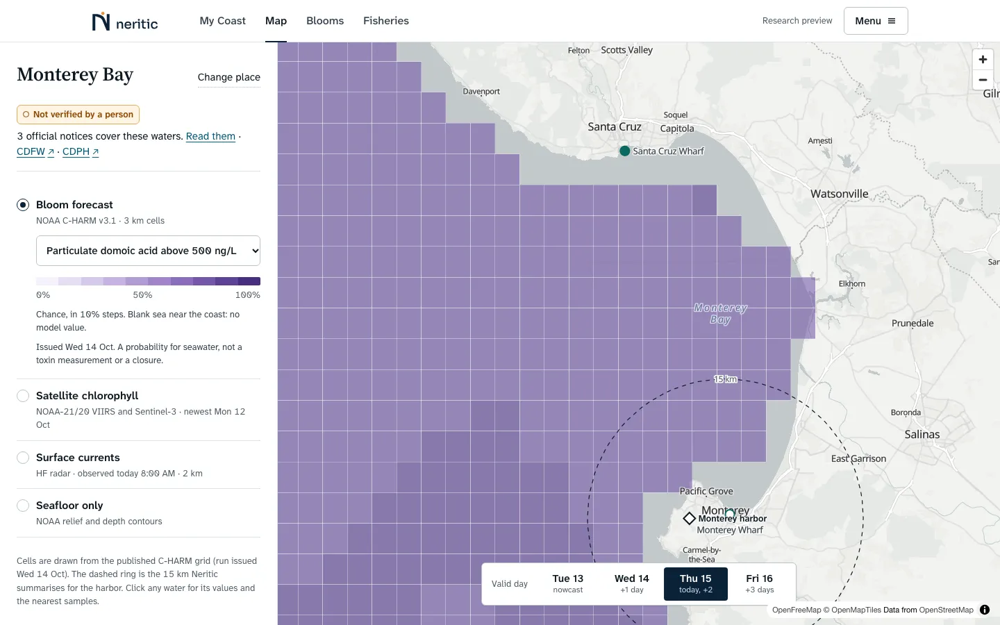
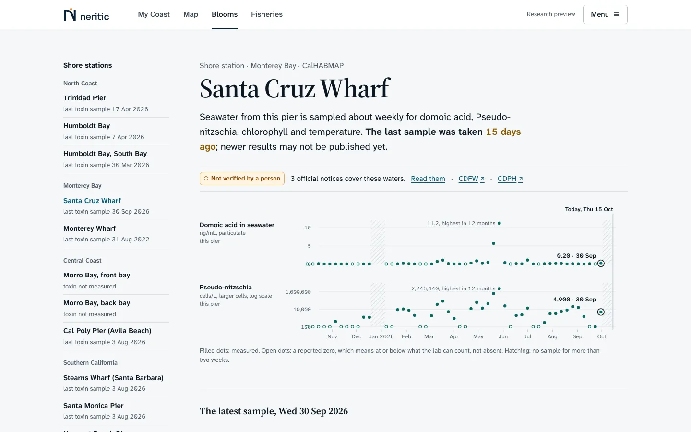
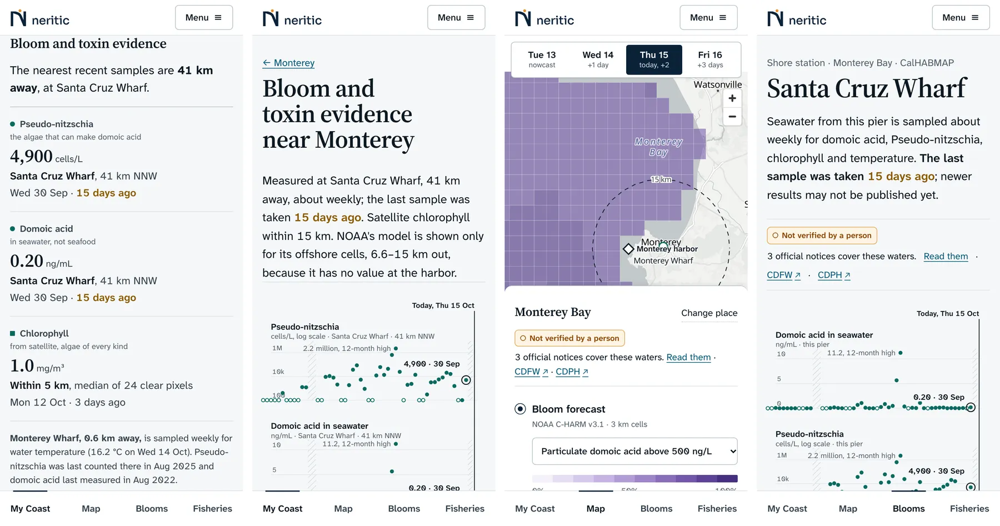
Direction B · Precision ocean instrument
A map-first instrument. One docked panel on the left on desktop, a bottom sheet with snap points on phone. Layer rows carry their legend, ticks, units and a provenance line. A time bar shows where data exists, marks today, and hatches and labels the forecast span. A tap returns value, unit, cell and valid/issued dates, or "No model value here" with the distance to the nearest cell. The C-HARM ramp is re-stepped to 5 % above 50 % so today's 71–83 % range separates. Type: IBM Plex Sans alone, re-scaled.
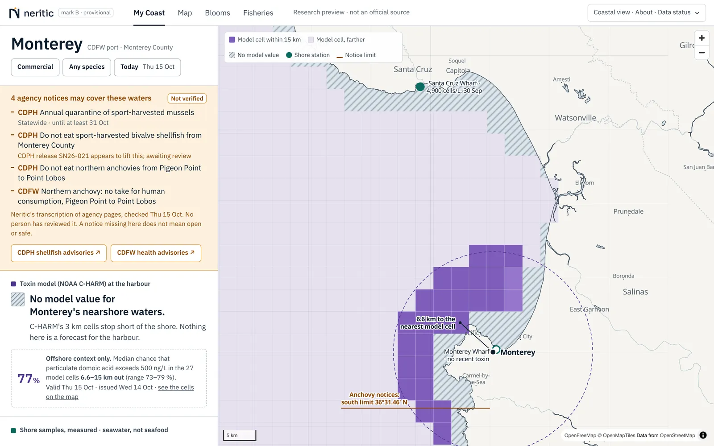
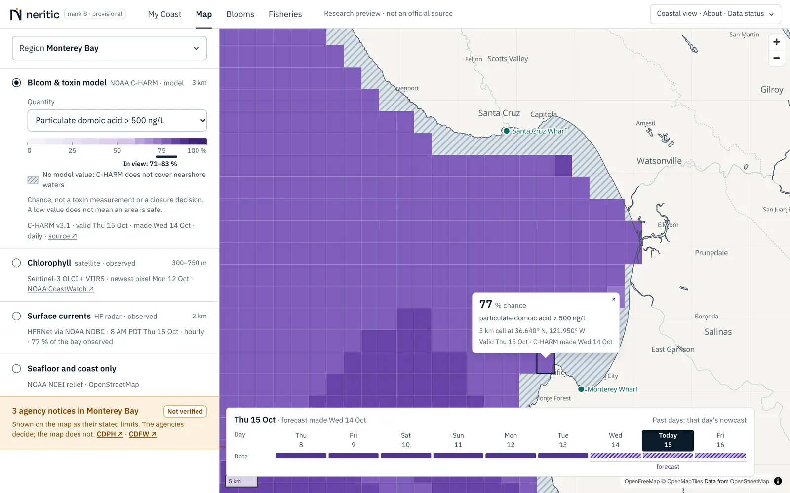
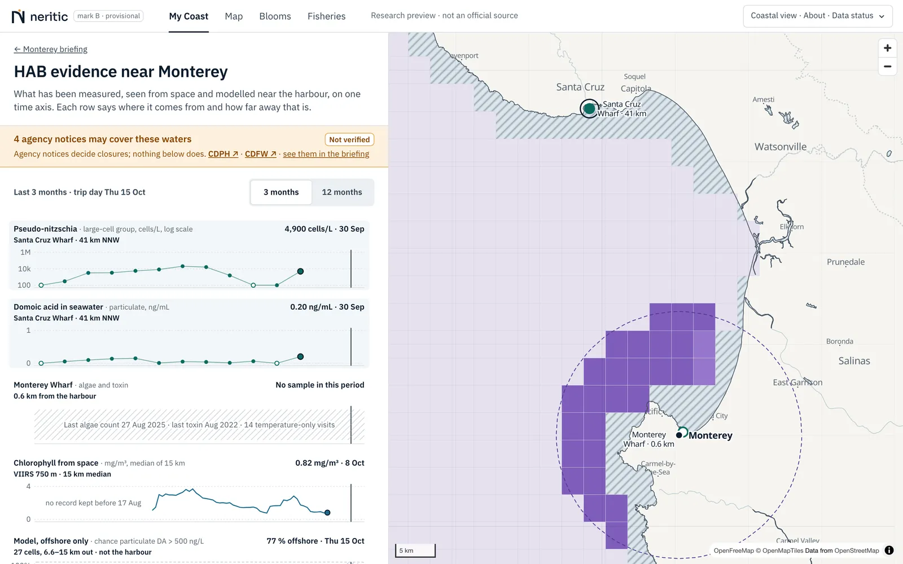
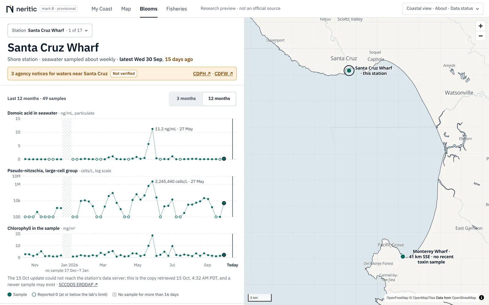
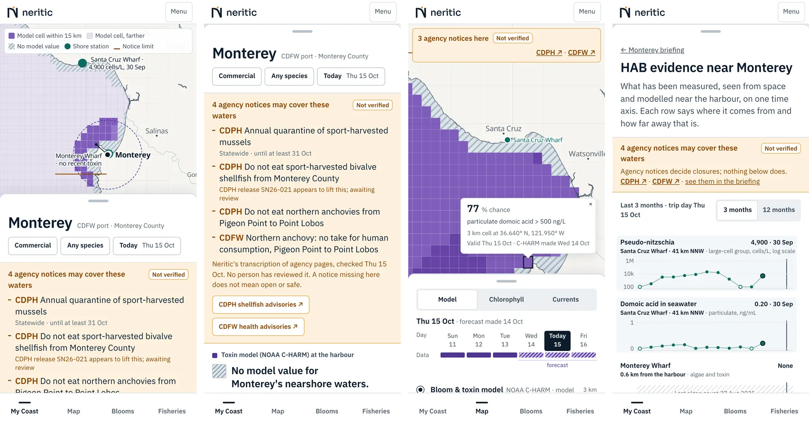
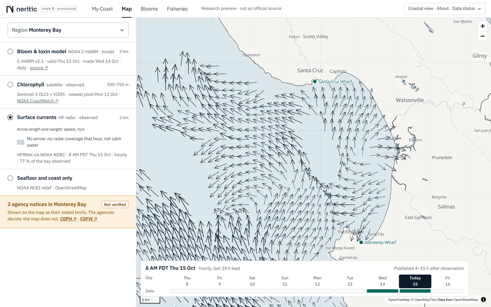
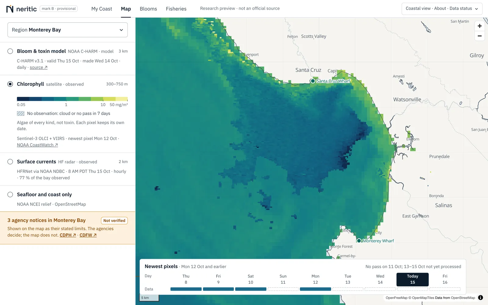
5 · Proposed tokens, type and motion
These apply to whichever direction is chosen. They replace the 18 ad-hoc sizes and the cream-and-navy palette.
Type
- Five sizes: 13 caption · 16 body (17 in the phone briefing) · 20 section · 28 page · 40 display. Line height 1.5 for body, 1.15 for headings. No half-pixel sizes.
- One text family with tabular figures for every value, and at most one display face for page titles. Values are set larger than their labels; units are set at 0.8× next to the value, never on another line.
- Sentence case throughout. No uppercase eyebrows. Monospace only for coordinates and dataset ids.
Colour roles
Semantic families stay, because they carry meaning that users have learned: official = amber, measured = teal, model = violet. They are re-tuned for 7:1 text contrast on the briefing surface and paired with a word and a shape, never colour alone.
Space and shape
- Spacing: a 4 px base, mostly 8 · 12 · 16 · 24 · 40 · 64. Tight inside a group, generous between groups.
- Shape: one radius (6 px). Surfaces are separated by a tone step or a 1 px rule, never border plus shadow plus tint.
- Touch targets: 44 px on phone.
Motion principles
- Frequency decides. These never animate: time scrubbing, layer switching (instant, or a 120 ms crossfade at most), values (no count-ups), notices, legends, and anything driven by the keyboard.
- Curves: enter or exit
cubic-bezier(0.23,1,0.32,1); on-screen moves(0.77,0,0.175,1); sheet(0.32,0.72,0,1). Never ease-in. - Durations: press 120 ms (scale 0.97); tooltip 125 ms, then 0 ms; popover 160–200 ms from its trigger; state change 200 ms; sheet 420 ms, where a flick above 0.11 px/ms dismisses; map fly-to 800 ms or less. Exits take about 70 % of the entrance time.
- Purposeful links: selecting a station highlights its evidence row, and hovering a row rings its marker. The connection is shown, never narrated.
- Reduced motion: opacity and colour only; fly-to becomes jump-to; particles become static arrows.
- Nothing moves on first load. That avoids layout shift and hydration-timing failures.
6 · Recommendation and tradeoffs
Build B's structure, with A's typography and reading surfaces, on the relief basemap. The two directions are not rivals: each solved half of the problem better.
| A · Editorial | B · Instrument | |
|---|---|---|
| Harbor versus offshore model | Headline plus a to-scale distance strip: clear, but abstract. | Better. The actual cells, the hatched gap and a measured 6.6 km line on the map. Nobody reads 77 % as the harbor. |
| Reading a briefing on a phone | Better. Answer first, measurements as composed units, 17 px, calm. | Good, but the notice block dominates. |
| Map, time and layers | Adequate. | Better. Provenance rows, a presence-and-forecast time bar, a tap readout. |
| Charts | Excellent single-axis evidence ledger. | Excellent aligned station panels; linked selection. |
| Brand distinctiveness | Higher. A new type pairing, a cool paper tone. | Lower: it keeps Plex. |
| Implementation risk | Lower: mostly layout and type. | Higher: the time bar, the sheet and map interactions need careful engineering and tests. |
The merged direction, concretely
- From B: the map-first Ocean Map with its docked panel and bottom sheet; layer rows with legends and provenance; the time bar; the tap readout; the embedded My Coast map that draws offshore cells, the gap and the distance; and the linked station-to-evidence selection.
- From A: the type system (Source Serif 4 for display, Atkinson Hyperlegible Next for text, 13/16/20/28/40, 17 px phone body); the answer-first summary; measurements composed as value, place and distance, and time and age; the single-axis evidence ledger; the station page layout; caveats in the margin on desktop.
- From the current product: the shaded seafloor relief and depth contours as the map's base (neither prototype used it, and it is Neritic's most distinctive visual), and the satellite chlorophyll rendering.
- Fixes to both: notices collapse to a count, a "not verified" chip and agency links, then one line per notice relevant to the activity, with the rest behind "all notices here". The C-HARM ramp keeps B's 5 % steps above 50 %. Current arrows thin by zoom.
Tradeoffs to accept
- A second typeface and a new display face add 2 font files (about 60 KB). Worth it: Atkinson Hyperlegible exists for exactly this reader.
- The time bar and the sheet are the riskiest engineering. They land in phase 4 with their own tests, after the low-risk foundations.
- Research mode becomes a depth layer ("Evidence and sources") rather than a separate mode. Researchers lose a toggle but gain the same charts everywhere. This needs your decision.
- Some long explanatory copy moves to the margin or behind disclosure. No legally or scientifically important warning is removed. Each is said once, next to the thing it qualifies.
7 · Implementation phases and acceptance criteria
Each phase runs on the design branch with tests and a private preview. Nothing merges or deploys without your approval. API contracts, data, URLs, scientific logic and Vercel projects stay untouched.
| Phase | Scope | Accepted when |
|---|---|---|
| 0 · Baseline | Commit the visual-regression baseline: Playwright screenshots at 5 widths for 12 routes, plus the metrics script. | Baseline reproducible in CI's Linux container. Metrics recorded. |
| 1 · Foundations | Tokens, the 5-size type scale, fonts, colour roles, radius, spacing, the approved logo and icons. | No more than 6 font sizes on any page. Phone body 16 px or larger. Axe passes on all routes. No visual change to data layers. |
| 2 · Shell and notices | Four-destination navigation; one notice surface per screen; mode, About and data status move to a menu; no floating button over content. | Notice status shown once per screen, with CDFW and CDPH links on every page (tested). 10 or fewer targets before content. |
| 3 · My Coast and evidence | Answer first, one evidence section, one checklist; distance and age as part of every value; the harbor-versus-offshore model treatment. | Monterey briefing at most 3 phone screens before the checklist. A test asserts the "no model value here" headline precedes any offshore probability, and that the offshore value is always labelled with its distance. Every fact appears once. |
| 4 · Map | Layer rows with legends and provenance; the time bar (issued/valid, today, hatched forecast); the perceptual C-HARM ramp; a lighter gap hatch; a tap readout; the boundary-label fix. | Consistent day labels (tested). The ramp separates 70–80 %. The readout gives value, unit and valid time, or "No data here". Phone: 44 px targets, sheet snap points, reduced-motion path. |
| 5 · Bloom and charts | The station page leads with its 12-month chart; shared chart primitives (axes, units, today marker, gaps). | Every chart has an axis with units. No colliding labels at 320–1440 px (Playwright overlap check). |
| 6 · Motion and polish | Segmented controls, the sheet, fly-to, marker-to-evidence linking, focus and pressed states, skeletons. | No animation on load (CLS 0). Reduced-motion path tested. 0 hydration errors in 30 cold loads. |
| 7 · Proof | Before and after at 1440, 1024, 768, 390 and 320 px; two critique loops per phase; full Linux suite and CI. | Metrics improve against the baseline. All existing behavioural tests pass, with copy-based assertions updated only where wording deliberately changed. |
Fisheries, About and Sources inherit the foundations in phase 1 and get a lighter structural pass after phase 5.